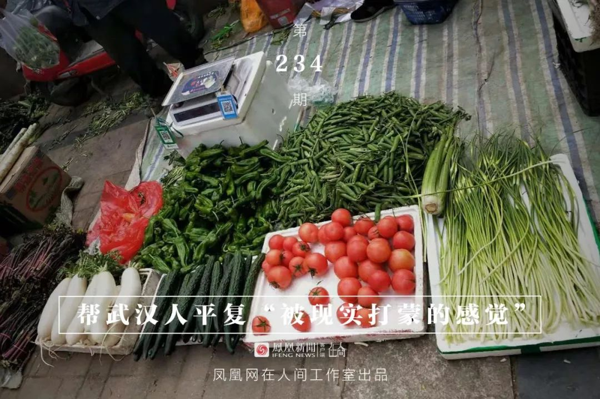
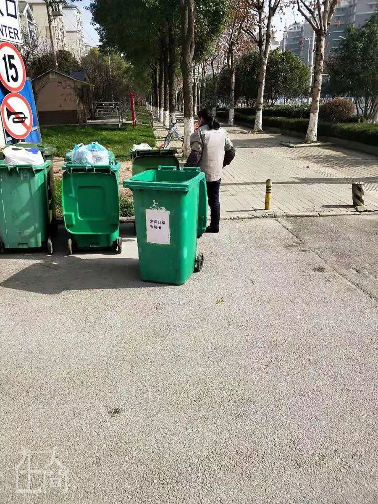
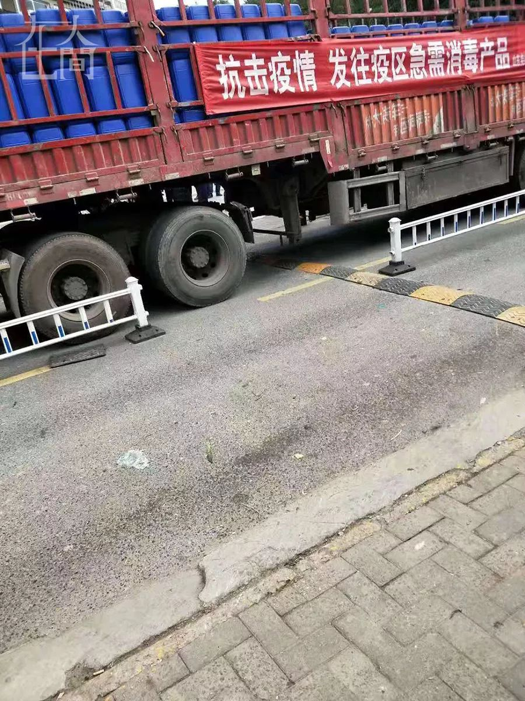
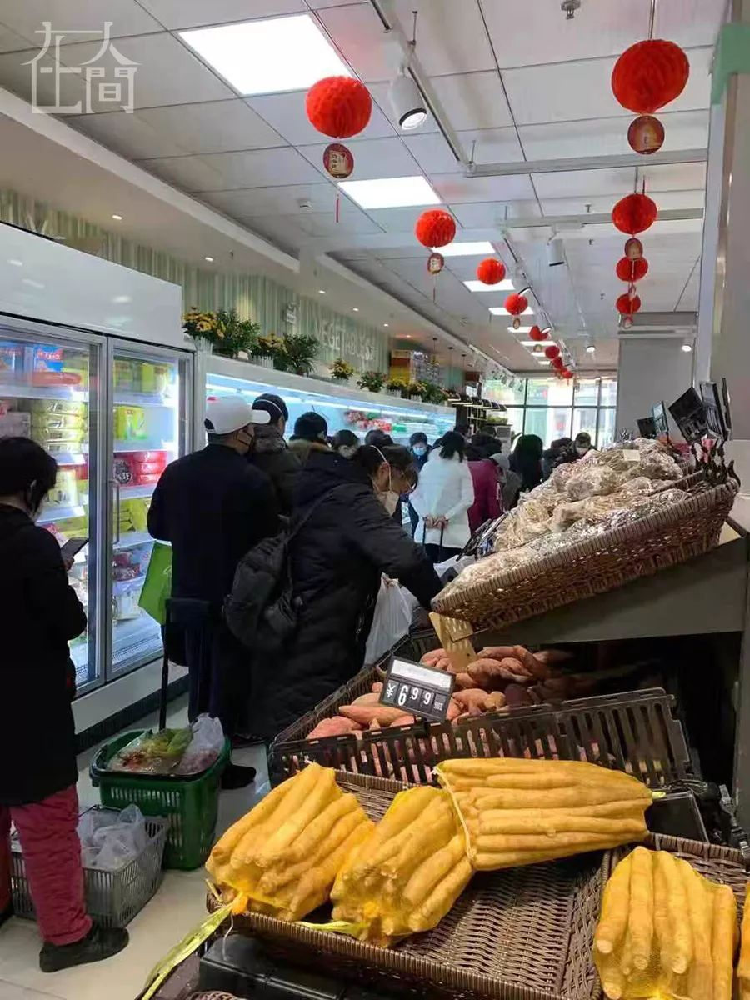
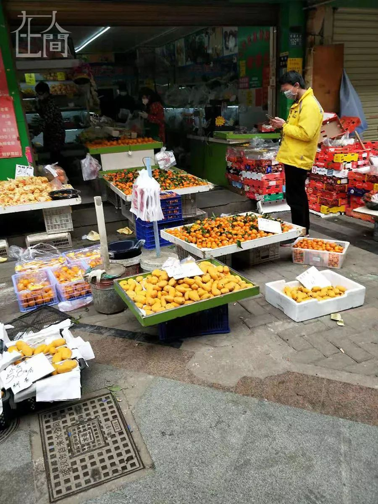

面对风暴，不要让自己患上“情绪瘟疫”
原文链接 备份链接 戴好口罩，保护自己。/《想见你》 ***在这场疫情防控阻击战中，每个个体在关心当下时事时，也要学会体察自己的情绪与心理。*** 食欲不振，作息紊乱，凌晨仍抱着手机不停翻看妄图穷尽所有与新型冠状病毒肺炎有关的信息，唯恐错 …


凤凰新闻客户端 凤凰网在人间工作室出品
我是一名普通心理咨询师，在武汉有一家心理工作室。我也是一名心理工作志愿者，长期服务于武汉一家三甲医院的危机干预热线工作组。1月24日，大年除夕，工作组取消休假，恢复接听，30几位成员（包括医院心理科工作人员和志愿者）紧急排班，进入疫情期工作状态。
我们工作组可以说是武汉市反应最快的一条心理援助热线。随后几天，本市民间心理团体、省外心理机构开始组织本行业的资深教授、专家，对临时招募的咨询师进行危机干预培训，陆续开通了多条心理援助热线。
我本人从武汉“新冠肺炎”疫情发作至今，一直留守在武汉，不仅亲历了整个疫情带给自己的巨大恐慌（见文章《一个武汉心理咨询师这样剥离自己的恐慌》），也有机会见证了卷入到集体恐慌潮中的部分民众的心路历程。
我亲身体验过被巨大的恐慌吞噬的无助，也倾听过留守在城里不同人群、不同层级的焦灼恐慌，还有逃离城外的武汉市民，发着烧不敢出门买药，体会到被歧视的无奈、被拒绝的悲愤、有家不能回的绝望。我发现，无论在城里的人，还是城外的人，乃至整个国家的人，都谈论着同一种病毒、同一种情绪。我们从未像今天这样紧密相连，休戚相关。
在这篇文章里，我尝试用心理学的视角，去理解曾经走进危机热线里的一个个鲜活的个体，希望藉由这样的理解，帮助有类似处境的人从心理上找到一个锚定点，尽可能清晰地看见自己身上发生了什么。
理论上讲，如果我们知道在自己身上发生了什么，这个知道本身会帮助我们获取力量，去直面自己的恐慌、焦虑、愤怒、无助、难过、绝望等各种不良情绪，学会临危不乱，适应困境，学会在艰难的处境里，寻找到宝贵的资源，挽救自己的生命。

■ 小区门口放了专门扔口罩的垃圾箱。

替代性创伤简称VT，最初指的是专业心理治疗者，因为长期接触患者，受到了咨访关系的互动影响，而出现了类似病症的现象，即治疗者本人的心理也受到了创伤。
现代临床也指，目击大量残忍、破坏性场景之后，损害程度超过其中部分人群的心理和情绪的耐受极限，间接导致的各种心理异常现象。
这些异常现象，通常是出于对生还者及其创伤的同情和共情，使自己出现严重的身心困扰，甚至精神崩溃。

■ 小区附近别的门店紧闭，只有药店开了。
替代性创伤的主要表现：厌食、易疲劳、体能下降、睡眠障碍（难以入睡、易惊醒）、做噩梦、易激惹或易发怒、容易受惊吓、注意力不集中；对自己所经历的一切感到麻木、恐惧、绝望，不明原因的情绪焦躁等，有时伴有创伤反应与人际冲突。
我们在做心理援助的时候，会对来电人员做一个分级评估，目的是根据各类人群的心理问题特点提出相应的心理援助策略。
分级评估的依据是按照疫情所处的感染风险和可能承受的心理应激强度划分：
一级人群：住院的重症患者、一线的医护人员、疾控人员和管理人员；
二级人群：居家隔离的轻症患者、疑似者、密切接触者、就诊的发热者；
三级人群：一二线人员的家人、亲友、同事等，参加疫情应对的后方救援者、居家医学隔离观察者；
四级人群：疫区相关人群、易感人群、普通人群。

■ 平常人来人往的人行道，没有人，躺卧着三只流浪狗。
根据这个分级人群划分，如果复盘23号的“封城”当晚我所处的情境，会很清晰地看到各个层级的人群在这场风暴中所呈现的状态，以及彼此之间是如何相互拉扯卷入到心理恐慌的风暴中：
感染冠状病毒第一批倒下的病人是直接受害者，一线的医护人员、疾控人员和管理人员，因为职业的特殊性，必须在突发性事件发生后第一时间在现场，是创伤的间接受害者——替代性创伤的传播源。
他们承担的心理压力与救治的重症病患同属一个级别，病患时刻承受着死亡焦虑的煎熬和躯体痛苦，难免有绝望、放弃生命的念头，而医护人员就是在这样环境下，连续高强度地工作着。
平时，他们可能有用于自我保护的防御机制，可长时间暴露在过度创伤的环境里，无可回避地承受着身体与心理上的高强度压力。
他们就是处在暴风眼中心的人。当他们发出同事流泪大哭的视频、医院走廊人满为患的图片，其实是在说他们的心理状态已经极度脆弱，陷入崩溃的应激状态中，需要休息。
各种不同的替代性创伤情绪经由网络传输，迅速向周围人群蔓延，使得恐慌犹如一场龙卷风暴，从少数人的心理应激反应开始，迅速席卷了大部分的神经。
我们每一个人都不同程度被感染，不由自主地出现不同的替代性创伤反应。

■ 社区小道，一辆来自山东载着防疫专用消毒液的车。

热线工作组考虑到安全的需要，将值班室现场接线，改成了呼叫转移的线上方式。
第一天上线接听来电的老师反馈回来的数据，让所有伙伴都感到很吃惊，接电数量几乎是非疫情时段的五倍！以前四个小时接电6个，现在要接30-40个电话；未接来电又是已接来电的3倍左右。算起来，总的来电人数是非疫情时期的10-15倍。

■ 附近社区组织工作人员认领刚运到的消毒液。
工作组根据来电人员的症状，对所有来电有一个更为具体的分类：
1、封城后的焦虑或是抑郁症状发作的占50%，表现主要是心神不宁、坐卧不安、有失控感；总担心病毒会降临到自己和家人身上，出现出汗、心跳加快、口干、莫名发脾气等症状；
2、怀疑已经患病、感到恐慌的人占20%，表现为低热病人担心去医院看病被医院隔离而不敢去；听到周围住着有病毒感染的人感到很害怕，心惊肉跳；有躯体疾病合并情绪问题后病情加重；怀疑自己患病多次去医院就诊等；
3、心理问题躯体化，占10%，反复量体温、喝水，有无力、疲乏感，没有食欲，胸闷等症状；
4、或是强迫症状发作，占10%，反复洗手，手都被洗破了；强迫性思维，不能控制地回想非典时期的严重后果，为此感到痛苦；
5、出现睡眠障碍，占5%；
6、其他，占5%，比如询问武汉市区的通路情况、如何出门拿药、咨询能否加入做志愿者等现实性问题。
我第一次的值班时段是27日，从下午一点到五点。四个小时下来，第一件事就是感觉到肚子很饿，很快给自己泡了一碗方便面。
我的身体感觉非常疲倦，脑海里似乎还一直回旋着挥之不去的焦虑感、恐慌感，充斥着“我该怎么办”的声音。
我很深切地体验到，打进电话的人无论讲述什么现实层面的问题，都与他们的恐慌感、焦虑感、失控感有千丝万缕的联系。
我注意到，来电的人群80%属于三级、四级人群，他们可能是全家居住在一起的普通市民，家里有一位年老体弱的人，属于易感人群，足以让全家的情绪都陷入焦虑和恐慌中。
他们可能接触过疑似病例，可能亲眼见过所在小区有人蒙着白布被救护车抬走；他们还可能是低烧的人，社区既没有给试纸，也不能做CT，他们不知道自己是不是也会被传染上，潜伏期的恐慌加深了焦虑。
他们可能在假期伊始是兴奋的，然而不知不觉越来越焦虑，感觉孩子的毛病也多，家人怎么那么烦，唠叨怎么那么多，宅得要爆炸了。
还有与疫区发生过关联的人员，比如有人在武汉转乘过交通工具、封城前已经出去度假或者回老家，他们经历了一个前所未有的让人难忘的春节。这些人出门被议论，回家被电话追踪，外出很可能还被限制，住店也遭盘查，他们担心发烧被传染，虽然身体离开了武汉，但是心理从来没有逃出恐慌，还多了一层有家不能回的委屈、隐藏着无处发泄的愤怒……

■ 中百超市里排队购买生活必需品的人群。
如果你属于上述人群，这些感受都提示你一切正常。如果你发现自己的状态与“替代性创伤”的表现相似，请放下手机，去找点事情转移自己的注意力，缓解自己的情绪和不适。
你可以：
1、只看几个你信任的信息源，不要频繁地在网上搜集各种来源不明的信息，尽量减少对有关灾难信息的关注、接触、获取。
2、保持充足的睡眠，可以做一些室内运动，或者刷一刷喜欢的电视剧、电影和综艺；也可以与自己信任的家人或者朋友分享你的感受和想法。不用为此感到愧疚，照顾好自己的心情和身体比任何事情都重要。
3、最后一点很重要，接受自己处在创伤反应里，接受在这些事件面前产生的负面情绪。在创伤性事件面前，我们会焦虑、担心、愤怒、悲伤，产生无力感甚至是愧疚感。这是正常的。
人类在灾难面前会本能开启一系列自我保护机制，情感隔离、反向形成、自我补偿，还有抵消、比较。有人做慈善，用利他主义升华自己的情绪，也有人用幽默的心态面对痛苦，转化情绪。
我庆幸我属于你们当中的一员，我们的生活可能受到了一些影响，工作收入也可能面临损失，但没关系，我们照顾好自己就行了。

■ 年前关闭了许久的水果店也开门了，附近人并不多。
我特别留意另外一群人，他们很少出现在热线另一头，就是危机一级人群和二级人群，我只是零星地接到了几个电话。
有一段时间，我也遗忘了他们，奇怪的是，周围的人不断对我提起他们。
提起他们的人要么远在国外，要么远在省外，是一些我远方的亲属、朋友和熟人，他们给我发过来一些微博上的求助信，那上面附着具体的姓名、地址、联系方式，还有水深火热的处境。求助的人们找不到床位，自己发着烧，亲人也已经感染，有的是全家都在发烧或者疑似感染。
亲友们询问我这是真的吗？他们很担心、绝望。我知道他们跟我被创伤的初期一样，启动了否认的防御机制，希望这些都不是真的。
我开始在电话中留意这种声音，希望能接到一线医护人员及家属、发热病患及家属的电话。然而，这样的电话少得可怜。
我确实接过一个。一个女人焦急地打进电话说，不知道自己接下来该做什么了。她公公在家发热了几天，越来越重，老公带着公公在某定点医院排队，不知道排不排得上。女儿跟爷爷奶奶住，现在女儿还没有发烧，但是自己发烧了。老公和公公出去了，不知道自己怎么办？
我评估了她的情绪，听她讲述具体经过，建议她去社区门诊拿药，先去看自己的发烧，多量女儿的体温。
我们在接受咨询时，除了要有专业的心理援助和危机干预的专业知识和技巧，还要熟知“新冠病毒”相关的医学常识、防治常识，熟知与疫情相关的防治政策、措施、具体归口单位、联络方式，目的是帮助来电者在面对灾难的时候，找回一些确定感，能够尽量多地恢复到适应现实的常态当中。
我试图帮这个女人恢复被现实打蒙了的感觉。接完电话后，我的无力感挥之不去。
社区分级门诊措施是好的，我的回答也没有问题。但现实是门诊无法满足人们的需要。这是一群被最近距离的人忽视的人们，他们发出的呼声惊醒了其他同胞。
1月31日，在抗击病毒的一线病房，有两名医生被患者家属殴打。殴打医生的人是一个病毒性肺炎死者的家属。我想到心理危机干预过程中的一个技术，即危机谈判技术。我们无法原谅在这个时候还有人出手伤害医生，但这可能并不是一起简单的刑事伤人案件，病人家属存在明显的创伤应激反应。在这样的非常时期，无力太久的人会爆发出强大的愤怒，这愤怒是想帮助自己恢复力量感。
原本，在防控疫情一线，死者家属和医生同属一级创伤人群，内心同样无助，愤怒指错了方向，使得家属不再体谅和感谢医生，而是失去控制的殴打和伤害。心理学有一个简单的理解人的原则，情绪没有对错，行为有对错。由于父亲感染肺炎病毒死亡而在医院里打伤医生，应激情绪没有错，错的是伤害医生的行为，最后造成的后果势必也是要自己承担的。
被医院无床位的现实击溃，到处游走的人们，通过各种途径寻求帮助是正常的。
情绪激烈没有对错，如果再不呼喊就是不正常的。
如果你发现某一项防治措施根本不可能帮到你，请想尽方法帮到自己。
不要轻易放弃自己的生命，即使无人再庇佑你，即使身体已经陷入极其艰难的境地。
请活下去，请不要停止求救。
我们在陪着你。
（出于心理工作的保密与伦理原则的需要，文中人物均为匿名，也请勿对号入座）。


新型肺炎疫情牵动人心，
《在人间》现面向全国网友征稿：
(一) 疫区影像日记
如果你身处疫区
请你用照片（视频）和文字记录
你所听闻和见到的一切
照片不少于3张
文字不少于300字
投稿方式：微信联系人间君（zairenjianliving）
（二）抗击疫情真实故事
无论你是一线医护人员、志愿者、
确诊或疑似患者及家属、已治愈出院人士等等，
如果希望讲述疫情相关经历，
请微信联系人间君（zairenjianliving）

原文链接 备份链接 戴好口罩，保护自己。/《想见你》 ***在这场疫情防控阻击战中，每个个体在关心当下时事时，也要学会体察自己的情绪与心理。*** 食欲不振，作息紊乱，凌晨仍抱着手机不停翻看妄图穷尽所有与新型冠状病毒肺炎有关的信息，唯恐错 …
原文链接 备份链接 2020年的春节，我一个人在武汉度过。 1月16日，小年夜的前一天，家人和好友询问我的归期，我回答还不能确定。我是一个心理咨询师，这段时间积攒的案头工作和学习的课程太多，便想着只给自己放三天假，回去跟家人吃个年饭就返 …
原文链接 备份链接 *▲ *2020年1月24日，在武汉大学中南医院重症隔离病房，医护人员为病人治疗。 （新华社记者 熊琦/图） 全文共*3298*字，阅读大约需要*7*分钟。 有医生刚脱下工作服，巨大的压力让其瞬间变身“小女生”坐在房 …
原文链接 备份链接 “新冠”肺炎像一把刀子，不仅伤及血肉，更剖开了深入骨髓的病灶。清醒的人们必须发出声音，说出真话。今天来信的作者吴俊宇来自江西宜春。在过去一段时期里，伴随全国经济飞腾的大潮，宜春也创造出一幅繁荣景象。不料疫情到来，小城 …
原文链接 备份链接 ********** *****一名求助者的父母均被确诊，分别住在两家医院，她要在医院间来回奔波照料。**********打通电话时，她刚从病重的父亲那里出来，就在病房楼下，一会儿还要赶到另一家医院陪伴打针的妈 …